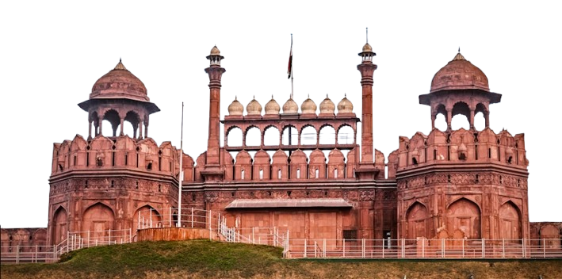
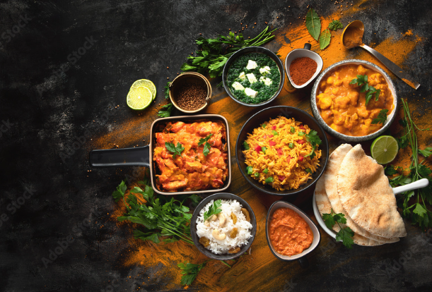

WELCOME TO
IN DIA
 History:
India, one of the world's oldest civilizations, dates back over 5,000 years. It is the birthplace of major religions like Hinduism, Buddhism, Jainism, and Sikhism. The ancient Indus Valley Civilization laid the foundations of urban planning and culture. India's Vedic heritage shaped philosophies, literature, and science long before modern times. From Ayurveda to Yoga, India gifted holistic healing and spiritual disciplines to the world. Its diverse landscape spans the Himalayas, fertile plains, deserts, and tropical coasts.More than 22 official languages and thousands of dialects reflect its linguistic wealth. India’s epics, the Mahabharata and Ramayana, hold timeless ethical and philosophical truths. Art, music, and architecture

Temples
The Swaminarayan Temple, known for its intricate carvings and spiritual aura, stands as a marvel of modern devotion and craftsmanship.Built using traditional methods and stonework, it reflects the teachings of Bhagwan Swaminarayan and promotes universal values.From Akshardham in Delhi to BAPS Mandirs abroad, these temples are not just places of worship but centers of art, culture, and service.India is home to thousands of temples, each rooted in unique regional styles, rituals, and mythologies.
Food
Indian food is a celebration of bold spices, rich flavors, and regional diversity. From creamy butter chicken in the north to tangy sambar in the south, every dish tells a story. Biryani, a fragrant rice dish, blends Persian and Indian culinary traditions. Street foods like pani puri and samosas add crunch and zing to every corner. Roti, naan, and dosa form the base of many meals, often served with flavorful curries. Indian sweets like gulab jamun and jalebi add sweetness to festive moments. With vegetarian roots and aromatic layers, Indian cuisine is both soulful and satisfying.
